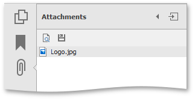
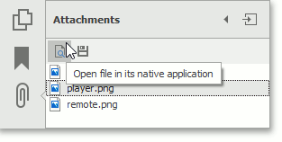
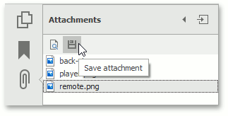

File Attachments
This document describes the available actions for attachments in the PDF Viewer.
An attachment is a file that is attached to a PDF document. The PDF Viewer shows file attachments in the Attachments panel of the navigation pane.

Open an Attachment
To open certain file attachments, you need an application that can read the corresponding file format. To view an attachment, do one of the following:
double click the attached file;
or
select the file and click the "Open file in its native application" icon in the Attachments panel.

The Security Warning message appears. It warns you that the PDF Viewer will be use an external application to open the attached file.

Click Yes to open the attached file, otherwise click No.
Save an Attachment
The file attachment can be saved to your disk. To do this, select the file and click the "Save attachment" icon, as shown below.

The Save As dialog appears.

Choose the file attachment location on the disk, specify the file name, and click Save.